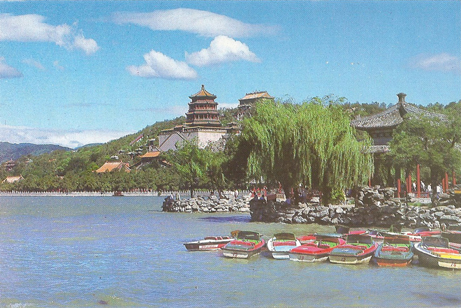
.
Pleased with our success in cycling into central Beijing, we hired bikes again and decided to cycle to the Summer Palace, some 22 miles north-west of Beijing. A great idea until my bike got a puncture and I had to push it much of the way back, eventually stopping to get a taxi back to the hotel ... Here we are, half way to the Summer Palace.
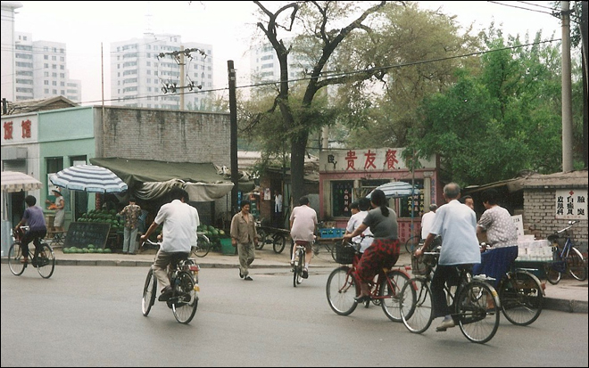
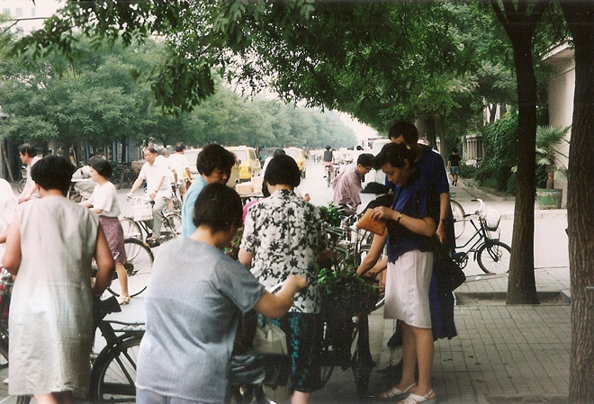
The Summer Palace is a vast ensemble of lakes, gardens and palaces in Beijing. It was an imperial garden in the Qing Dynasty. Mainly dominated by Longevity Hill and Kunming Lake, it covers an expanse of 2.9 square kilometres (1.1 sq miles), three-quarters of which is water.
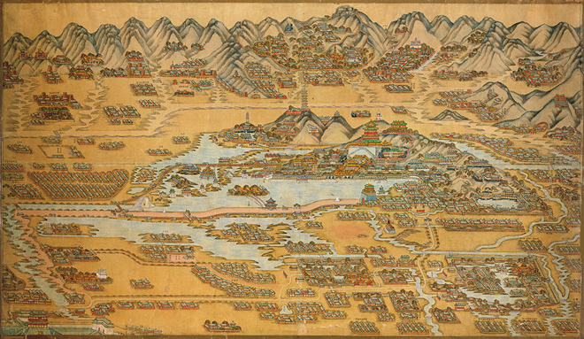
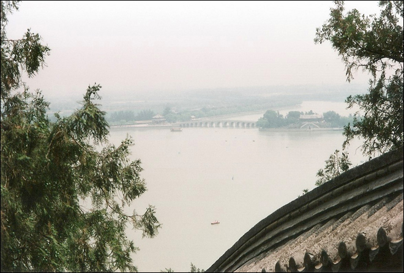
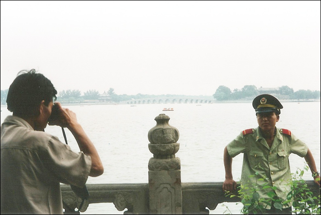
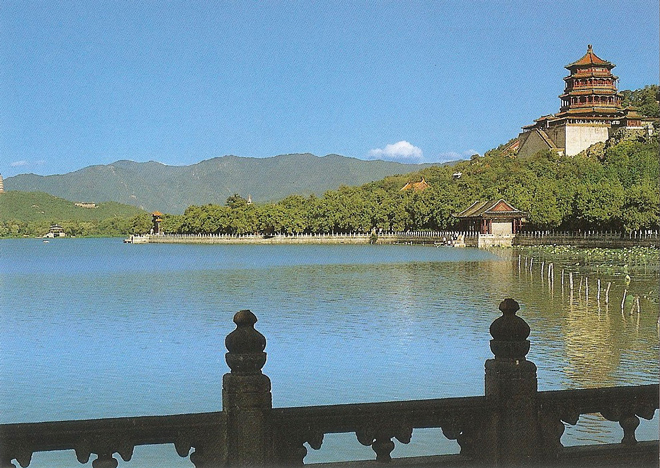
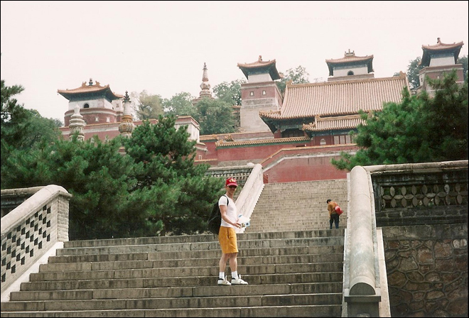
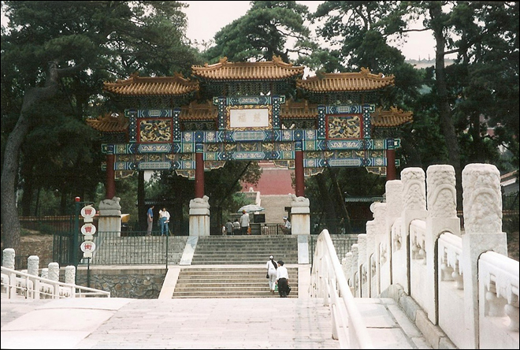
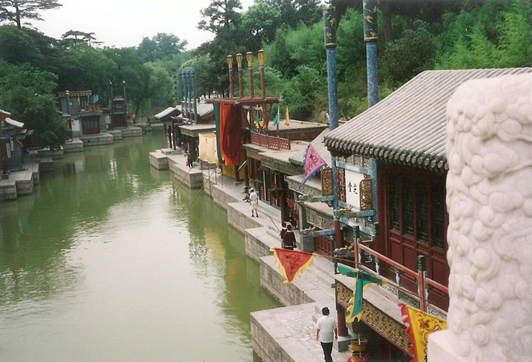
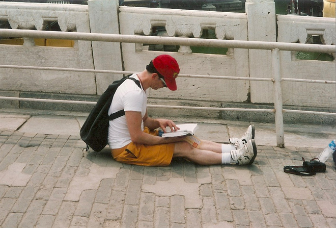
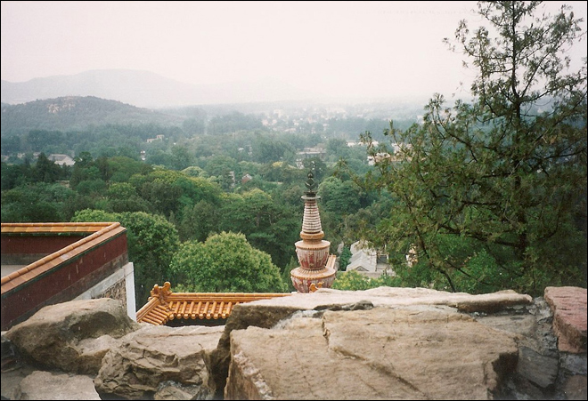
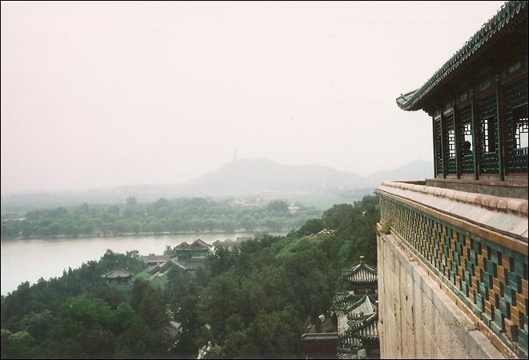
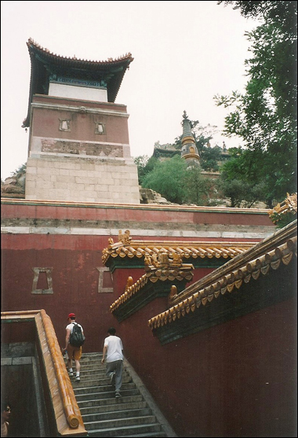
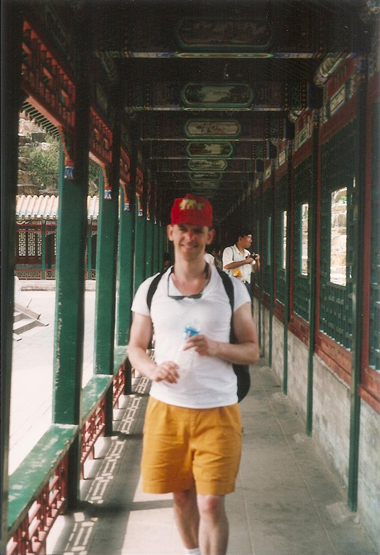
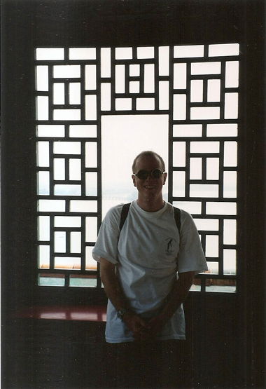
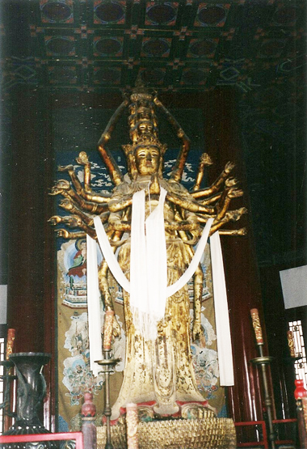
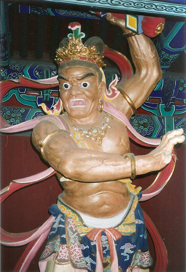
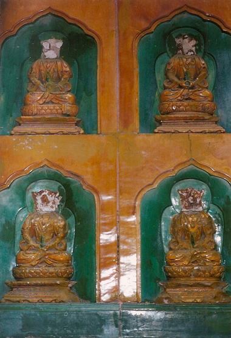
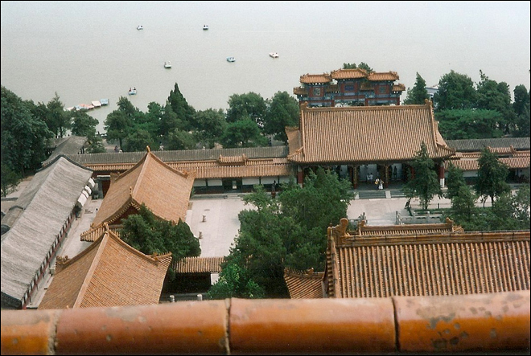
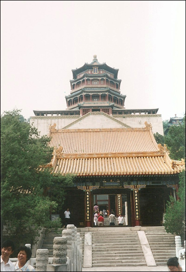
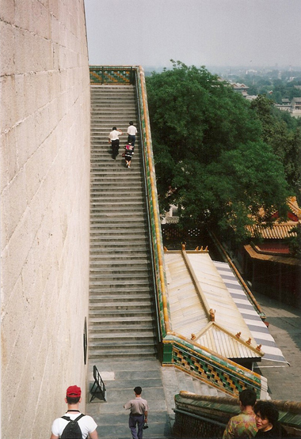
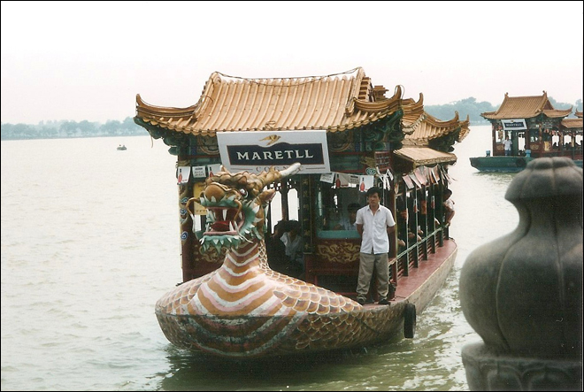
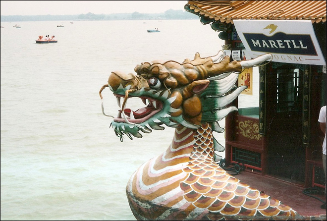
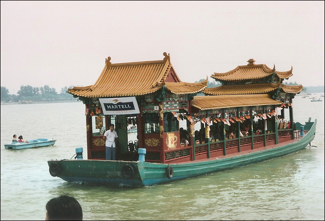
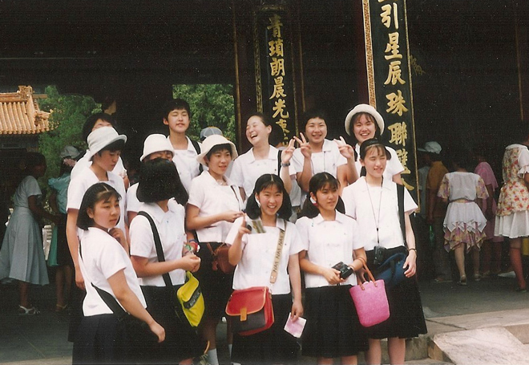
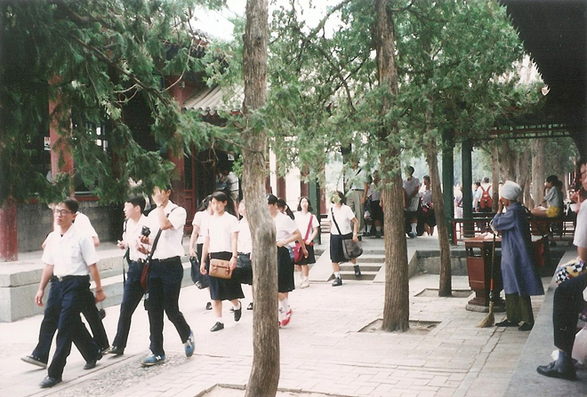
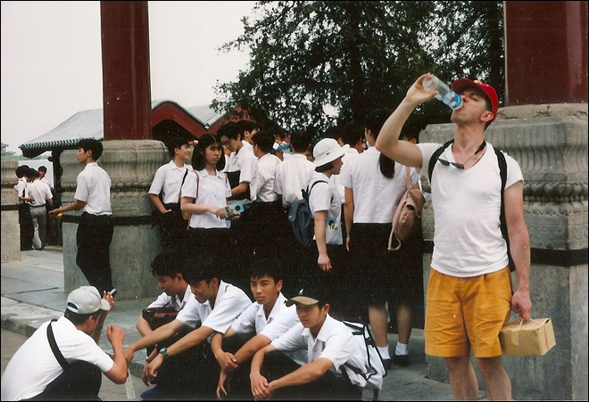
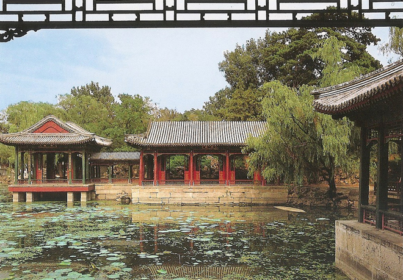
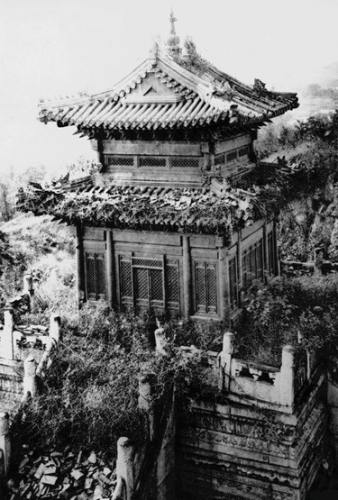